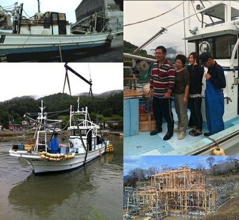

皆さんの支えがなかったら ・・・ようやく果たせた進水式へのお礼
岩手県大船渡市からうれしいおたよりをいただきました。津波により家や仕事場、仕事道具などを失ってしまったご一家が、全国のみなさんからの支援物資に支えられ、自主再建のための新たな一歩を踏み出したとのこと。「皆さんにぜひお礼を言いたい」と寄せられたメッセージをご紹介します。(2013/2/28公開)
「家や船、作業道具などすべてを流されました」
ふんばろうが発足して間もない頃は、ネット環境が無い方やパソコンや携帯の利用に慣れていない高齢者の方などに代わり、ふんばろうに物資支援の相談してこられたご家族がいらっしゃいました。
関西で暮らしているTさんもその一人。ご実家は岩手県大船渡市で漁業をされていましたが、津波被害に遭い、家や船、作業道具などすべてを流されました。
Tさんのご相談は、ご実家の志田家と、一緒に避難されている父方の叔父さん一家、そしてTさんの知人である澤さん一家に、食料、生活物資、カッパなどを支援してもらえないかというものでした。
その希望物資は【25】澤さん避難宅、【63】志田さん避難宅、という名称でふんばろうのサイトに登録されることにより、全国の皆さんから宅配便などで届けられました。
三家族は船や仕事道具ををすべて流され途方に暮れ、日々を生きていくだけで精一杯だったので、皆さんから送っていただいた支援物資が大きな支えとなったとのことでした。
「自分たちの手で船と家を再建」
2012年、春。
Tさんが澤さんからのメッセージをメールで送ってくださいました。「応援してくださった皆さんに、［自分の船の進水式］の写真をぜひ見ていただきたい」というものでした。
先月、待ちわびた船ができ、無事進水式を迎えることができました。
ご支援くださった方々、スタッフの皆さんに、どれだけ支えていただいたかわかりません。
本当に皆さんだけが頼りでした。
感謝の言葉もみつかりません。
本当にありがとうございます。
ご支援くださった方々、スタッフの皆さんに、
「皆さんのおかげで、ここまでたどり着けました。皆さんのことは決して忘れません。」
を伝えたくて、進水式の写真を送ります。
ふんばろうさんのサイトから、みなさんにお礼をお伝えいただく事はできますでしょうか？
ご支援くださった方々、スタッフの皆さんに、どれだけ支えていただいたかわかりません。
本当に皆さんだけが頼りでした。
感謝の言葉もみつかりません。
本当にありがとうございます。
ご支援くださった方々、スタッフの皆さんに、
「皆さんのおかげで、ここまでたどり着けました。皆さんのことは決して忘れません。」
を伝えたくて、進水式の写真を送ります。
ふんばろうさんのサイトから、みなさんにお礼をお伝えいただく事はできますでしょうか？
その後、志田さんからのメッセージと写真も送ってくださいました。
父（志田さん）も、一緒に避難所生活をしていた叔父も、全国の方々から生活物資を送って頂きました。
心のこもったご支援に、本当に感謝していて、
「皆さんの支えがなかったら、ここまでこれなかったものなぁ。ホントにありがたくって、ありがたくって。何にもお返しはできないけど、少しずつだけど頑張ってるって伝えることができればなぁ。」
と、前々から言ってました。
叔父は、自宅・納屋・作業場は全て流され、船も諦めていた時に、偶然知人が岩場に乗り上げていた船を見つけてくれたそうなんです。
「仮設住宅では漁師はできない」と、高台移転ではなく自主再建の道を選び、自宅を建設することになりました。
そして先週、お天気に恵まれた棟上式を迎えることができました。
「ここまでこれたのも、本当に全国の皆さんのおかげだぁ。」
と、しみじみ言っておりました。
澤さん（叔父とも交流があります）が進水式の写真をふんばろうに送った話しをしたところ、「俺の写真も是非送ってほしい」との事だったのです。
ホームページなどで皆さんに「ありがとう！」をお伝えいただければと思います。
心のこもったご支援に、本当に感謝していて、
「皆さんの支えがなかったら、ここまでこれなかったものなぁ。ホントにありがたくって、ありがたくって。何にもお返しはできないけど、少しずつだけど頑張ってるって伝えることができればなぁ。」
と、前々から言ってました。
叔父は、自宅・納屋・作業場は全て流され、船も諦めていた時に、偶然知人が岩場に乗り上げていた船を見つけてくれたそうなんです。
「仮設住宅では漁師はできない」と、高台移転ではなく自主再建の道を選び、自宅を建設することになりました。
そして先週、お天気に恵まれた棟上式を迎えることができました。
「ここまでこれたのも、本当に全国の皆さんのおかげだぁ。」
と、しみじみ言っておりました。
澤さん（叔父とも交流があります）が進水式の写真をふんばろうに送った話しをしたところ、「俺の写真も是非送ってほしい」との事だったのです。
ホームページなどで皆さんに「ありがとう！」をお伝えいただければと思います。

★写真説明
左上・岩場に乗り上げていた”日の丸・叔父の船”を造船場に引き上げた（2011年5月）
左下、右上・日の丸の試運転、家族写真（2011年9月）
右下・叔父宅、棟上（2012年4月21日・お盆前に完成予定）
2012年3月末日に物資支援プロジェクトが終了するまでは、ふんばろうに届いた支援御礼メッセージは各避難宅のページに掲載し、支援者の方に読んでいただけるようにしていましたが、その後はスタッフだけが読ませていただいていました。
時をおいてからも、このようなおたよりをいただき、お元気な皆さんのお話を聞けることに、大変感謝しています。ありがとうございました。（物資支援プロジェクト スタッフより）
時をおいてからも、このようなおたよりをいただき、お元気な皆さんのお話を聞けることに、大変感謝しています。ありがとうございました。（物資支援プロジェクト スタッフより）